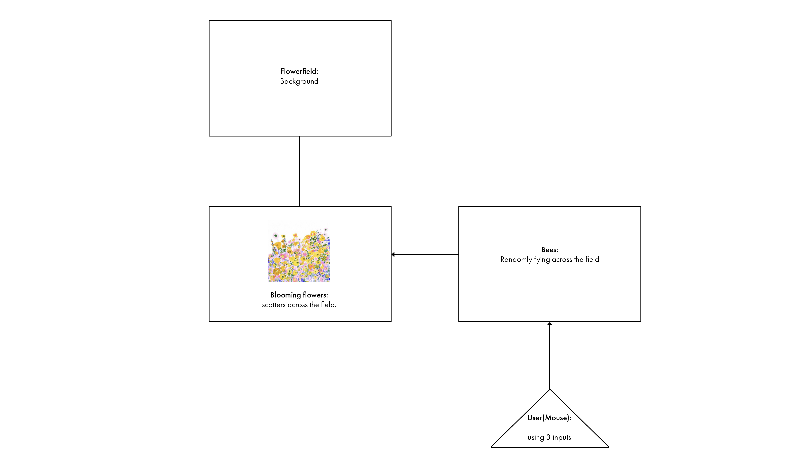

Project 4
Indiviual Project
Building an interactive system with 3 inputs.
Building an interactive system with 3 inputs.
I decided to continously working on Project 1 (A game simulates a living environment for bees and flowers.) The overall style is an illustrated environemnt.
There will be three key elements in this system. The Flower field(Using shapes and random colors that stimulate a illustrated flower field.) The second element is the bees(Oval shaped little dots represents the bees, they will come out and fly across the field.) and the last element is the day and night changes.(A changes in background color will bring out the bees)

I am still using photon with breadboard, 3 inputs include the PIR sensor, a potentiometer,and a button.

During the coding process, there are two key codes tutorials I referenced: The noise function from creative coder Hadeel Alharthi and the flocking system from the nature of code. I tried to use noise function to generates different visuals to achive a more organic feel of the flower petals. The Flocking system allow me to have bees flying as a group and steering towards random directions. It is fun exploring how digital system could simulate living beings' bevavior, but some codes are really complex and I could not fully grasp. But it gave me a sense of direction that I am interested in heading towards in the future.